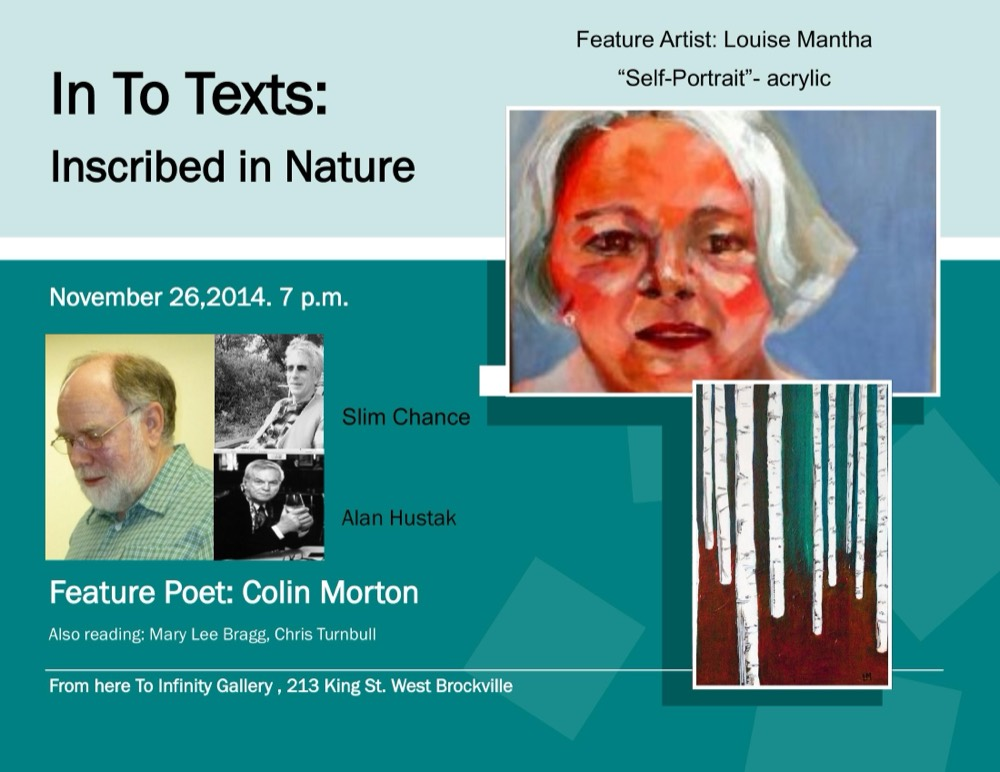

In To Texts: Poetry & Prose in All Media
A monthly open-mic reading series Nel started at From Here To Infinity Gallery, 213 King St. West, Brockville — inspired by a reading series in Kingston held at the Artel, where she first read her own poetry.

Each evening pairs an open mic with visiting feature artists, widening the circle beyond poets to musicians, visual artists, photographers, and artisans. The series runs in partnership with the Brockville Poetry Guild and, for its National Poetry Month editions, the League of Canadian Poets.
"Our goal is to bring a community together... we have widened our circle by including artists of all disciplines — musicians, visual artists, artisans, and quilters who engage in creative work."
— Nel Coloma-Moya, welcome remarks, In To Texts: National Poetry Month
Featured editions
-
Oct 15, 2014
"In To Texts: Of Travel Bugs and Shutterbugs"
Feature photographer Earl Rose and feature poet/musician G.W. Rasberry (Juno nominee), presenting "What's the Big Idea!"
"I believe good photography is the marriage of technical mastery and creative vision — capturing the breathtaking landscapes that Canada and the world have to offer."
— Earl Rose, photographer
-
Nov 26, 2014
"In To Texts: Inscribed in Nature"
Feature artist Louise Mantha (acrylic painter and member of the Frontenac Arch Biosphere community, exhibiting "Self-Portrait") and feature poet Colin Morton, author of One Hundred Cuts, with readings from Alan Hustak (Faith Under Fire), Slim Chance, Mary Lee Bragg, and Chris Turnbull.
-
Apr 24–25, 2015
National Poetry Month, with the League of Canadian Poets
The League of Canadian Poets and Brockville Poetry Guild presented three visiting poets — Heather Cadsby, John Oughton, and Susan McMaster (Past President, League of Canadian Poets, author of Crossing Arcs: Alzheimer's, My Mother and Me). The weekend continued with a poetry-writing workshop led by Ottawa poet Brandon Wint at the Brockville Public Library, followed by a poetry quest and open mic.